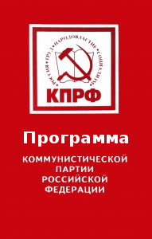

 Россия находится на крутом изломе своей истории. Обманом и насилием страна возвращена к капитализму. Это путь социального регресса, ведущий к национальной катастрофе, гибели нашей цивилизации.
Коммунистическая партия Российской Федерации вела бескомпромиссную борьбу против реставрации капитализма, разрушения Союза ССР и уничтожения Советской власти. КПРФ выступает единственной политической организацией, последовательно отстаивающей права людей наёмного труда и национально-государственные интересы. Стратегическая цель партии — построение в России обновленного социализма, социализма XXI века.
При определении своих программных целей и задач, стратегии и тактики наша партия исходит из анализа общественно-политической практики, руководствуется марксистско-ленинским учением и творчески его развивает, опирается на опыт и достижения отечественной и мировой науки и культуры.
1. Современный мир и Россия
Российские коммунисты считают, что принципиальный спор между капитализмом и социализмом, под знаком которого прошло XX столетие, не завершен. Несмотря на временные отступления революционного движения, современная эпоха представляет собой переход от капитализма к социализму.
Капитализм, доминирующий сегодня на большей части земного шара,— это такое общество, где материальное и духовное производство подчинено рыночным законам извлечения максимальной прибыли и накопления капитала. Всё превращается в товар, главной мерой отношений людей служат деньги. Капиталистический способ производства означает безудержную эксплуатацию человека и ресурсов природы без учёта губительных последствий для жизни будущих поколений и их среды обитания.
Подтверждается ленинское учение об империализме как высшей и последней стадии капитализма. Процесс концентрации капитала привёл в начале XX века к образованию крупных монополистических союзов. Произошло слияние банковского капитала с промышленным. Обостряющаяся борьба за передел рынков вызвала две мировые войны с огромными человеческими жертвами и множество локальных вооруженных конфликтов.
Во второй половине XX века, обогатившись за счёт хищнической эксплуатации ресурсов планеты, финансовых спекуляций, войн и новых изощренных методов колонизации, группа развитых капиталистических стран, так называемый золотой миллиард, вступила в период, именуемый “потребительским обществом”. Здесь потребление из естественной функции человека превращается в “священную цель”, от ревностного следования которой зависит социальный статус индивида. По сути дела, это — сверхэксплуатация и расширение рынка посредством навязчивой рекламы и других методов психологического давления.
Используя новейшие технологии, империализм ведёт зомбирование населения планеты. Он стремится опутать своей информационной паутиной весь мир, насадить в нём эгоизм, насилие, бездуховность и космополитизм.
После разрушения Советского Союза и реставрации капитализма на постсоветском пространстве и в Восточной Европе США и их ближайшие союзники проводят политику империалистической глобализации. Складывается крайне опасная ситуация. Международному противостоянию труда и капитала навязывается форма “войны цивилизаций”. Идёт новый передел мира. Перераспределяются сферы экономического, политического и военного влияния. Нарастает борьба за контроль над природными ресурсами планеты. Для достижения своих целей империалистические круги активно используют военно-политические блоки и прибегают к открытым вооружённым действиям.
Сложившаяся структура мира позволяет ведущим капиталистическим государствам сохранять относительную стабильность, ослаблять рабочее и другие протестные движения, сглаживать социальные конфликты в отдельных странах.
Однако, обеспечив высокий уровень потребления для небольшой группы стран, капитализм одновременно выводит человечество на новый виток противоречий, существенно обостряя все глобальные проблемы.
Дальнейшее сохранение капитализма как господствующей на планете системы грозит катастрофой. Даже самые ярые его сторонники признают, что развитие производства присущими капитализму хищническими методами ведёт к быстрому исчерпанию важнейших природных ресурсов. Углубляется мировой экономический кризис. Капитализм подрывает жизнь людей локальными войнами и постоянной угрозой их перерастания в новую мировую войну, перекройкой государственных границ, техногенными катастрофами, культурным и духовным упадком. Свободный обмен информацией также несовместим с современным рынком.
Капитализм сам создает предпосылки для установления более совершенного общественного строя. Главная материальная основа неизбежного наступления социализма состоит в обобществлении производства. Движущей силой этого процесса был и остаётся человек труда, рабочий класс. Научно-технический прогресс ведёт к коренному качественному и структурному обновлению рабочего класса города и деревни. Инженерно-технические и научные работники, труженики сферы обслуживания в большинстве своем сегодня также являются наёмными работниками. В результате этого складывается передовой отряд, ядро современного рабочего класса. В нём коммунисты видят свою главную социальную опору. К нему они в первую очередь обращаются со своими идеями, содействуют осознанию и реализации трудящимися их интересов в национальном и международном масштабе. В руках этой авангардной силы судьба не только России, но и всей человеческой цивилизации.
Российские коммунисты уверенно смотрят в будущее. Только социализм позволит преодолеть эксплуатацию человека человеком, расточительный характер капиталистического производства и потребления. Происшедшая в СССР и в ряде других стран реставрация капитализма означает временное отступление социализма. Причём проиграл не социализм как общественный строй, а ранняя его форма. Силы социализма зреют и растут. Ускоренно развивается социалистический Китай. Продвигаются по пути строительства социализма другие страны. В ряде государств у власти находятся коммунисты или прогрессивные партии, лидеры которых с симпатией относятся к такому пути. Вслед за Кубой всё увереннее проявляется стремление к социалистическому выбору в странах Латинской Америки. Усиливается национально-освободительная борьба во многих странах мира, лишая капитализм важнейшего резерва и источника продления своего существования. Громко заявляет о себе движение противников империалистической глобализации. Вот почему есть все основания считать, что в XXI веке социализм как учение, массовое движение и общественный строй получит своё второе дыхание.
2. Уроки истории и пути спасения Отечества
Оценивая закономерности развития человечества, КПРФ исходит из того, что каждый народ и каждая страна должны реализовать их с учётом своих особенностей и исторического опыта. Это в полной мере относится к нашему Отечеству. Россия внесла уникальный вклад в развитие человечества благодаря самоотверженному труду и ратным подвигам её народов, своеобразию общественного сознания, духовному горению её великих писателей, музыкантов и художников, учёных и инженеров, подвижничеству поколений русских патриотов, революционеров. Будущее нашего Отечества можно строить только на этом прочном фундаменте исторической преемственности.